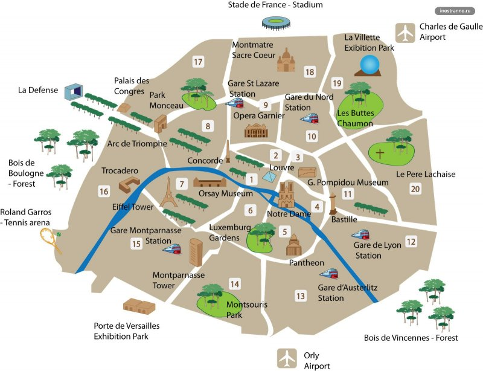

1. Основание города произошло 2000 лет назад. Только через несколько столетий после его основания он был признан одним из лидеров индустрии моды, культуры и науки. 2. Город Париж – столица французского государства. Такой статус был получен еще в 508 году до н.э., только представьте себе, как давно это было. Добавим, что он является самым многонаселенным городом во Франции

3. Это один из самых светлых городов планеты, потому что с наступлением сумерек включаются миллиарды разноцветных лампочек. Панорама просто потрясающая.
4. Город разделяется на несколько территорий – на несколько районов.
